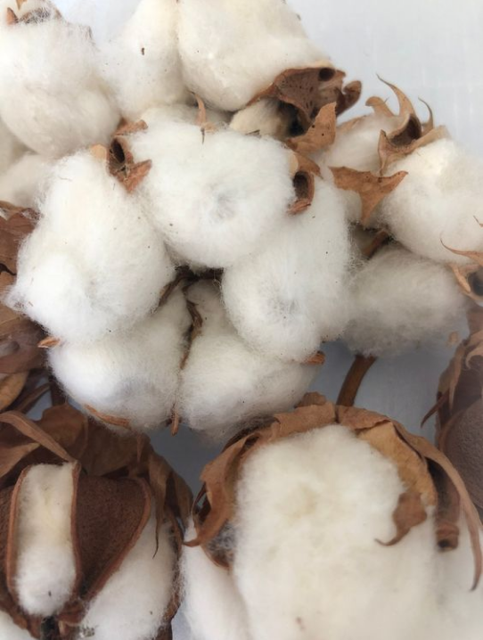
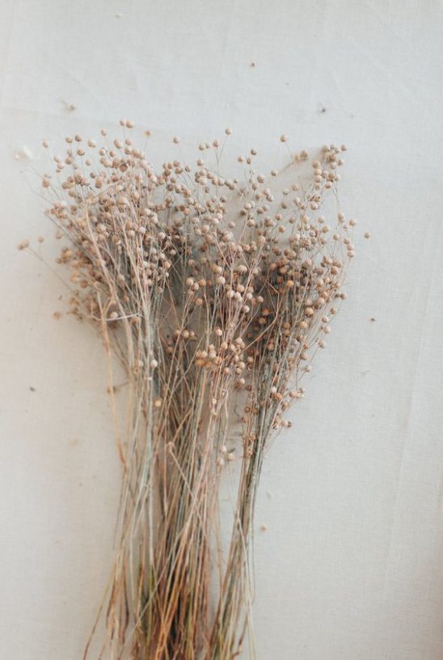
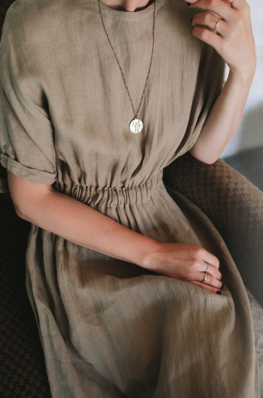
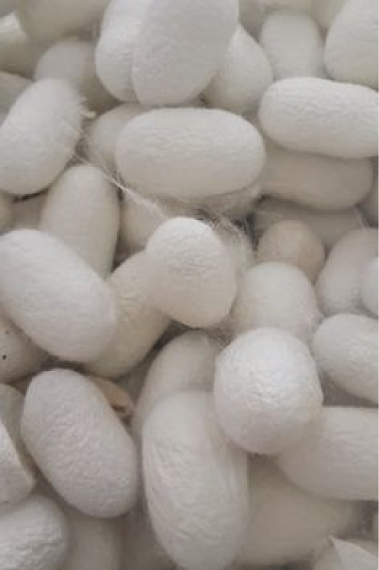
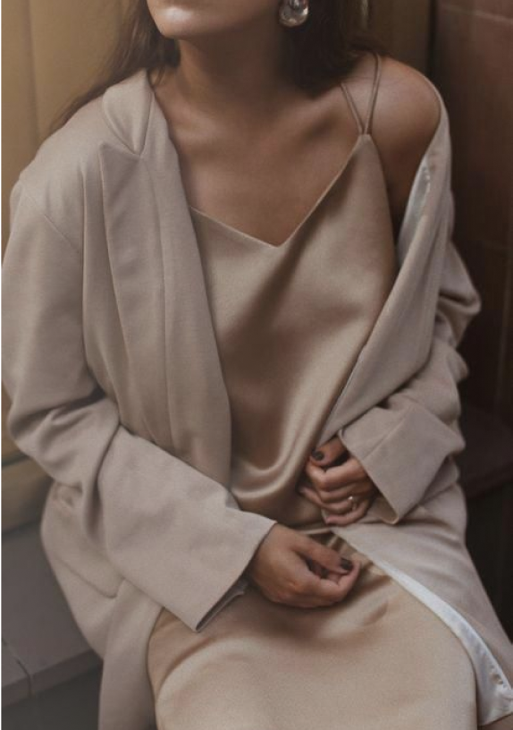
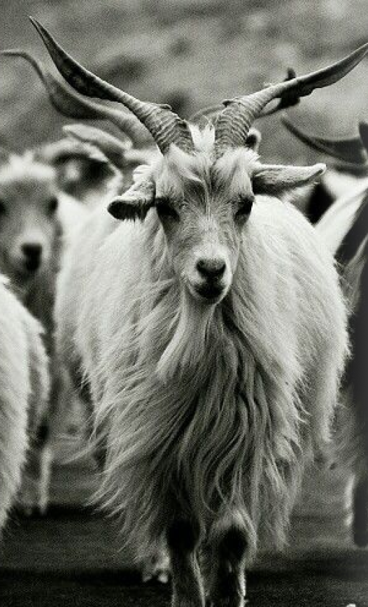
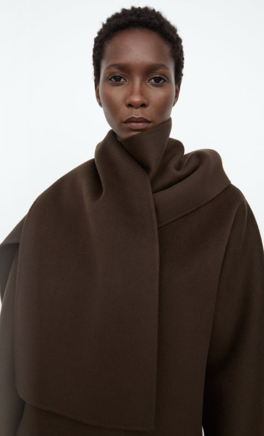

Sustainably sourced materials
At Modimal, we believe in investing in the now to design for the
future. That’s why we are committed to sourcing quality materials
that will have less impact on the environment.
So far in 2022, 92% of the base fabrics in our collection are more
sustainably sourced. Our goal is To use only 100% sustainably
sourced materials by 2025.
There are five kinds of fabrics in our collections that are
Organic and responsible sourced, and we highlight these so you can
make considered choices when you shop.
We track our material usage and progress annually as part of
Textile Exchange’s Corporate Fibers and Materials Benchmark, view
our latest report
here
.
we are continually exploring more sustainable alternatives that offer
the same quality and performance. we will soon add new fabrics in to our
collections which are recycling and repurposing. By giving a new life to
leftover fabrics through recycling and repurposing, we can reduce our
demand on the planet’s limited natural resources. Recycled fabrics are
made using the waste from both the pre- and post-consumer stage of a
product’s life.

Cotton
We source certified organic cotton, which is grown without the
use of pesticides or synthetic fertilizers and requires less
irrigation as it relies mainly on rainwater.
(1). Avoiding harmful pesticides preserves soil biodiversity and
protects the health of surrounding communities.
(2). Our organic cotton fabrics are made using organic cotton
yarns that are certified by the Global Organic Textile Standard
(GOTS)


Linen
Found throughout our collections, linen is a sustainable fiber made
from the flax plant. Flax is naturally pest resistant that requires
less pesticides, water and energy to produce compared to cotton and
polyester. Flax aids in sequestering carbon into the soil, which
removes carbon dioxide from the atmosphere and is beneficial for
improving soil health.
Silk
Organic silk is a more responsible alternative to making
conventional silk through traditional methods. The silkworms are fed
mulberry tree leaves from organic agriculture that uses no
pesticides or harmful chemicals and resulting in a lustrous fabric
that is gentle on both you and environment. this responsibly sourced
material epitomizes our dedication to creating exquisite clothing
with a conscience.




Cashmere
We’re proud to source our cashmere through the Good Cashmere
Standard by the Aid by Trade Foundation (AbTF). This independent
standard works to source traceable, sustainably certified cashmere
that cares for the wellbeing of cashmere goats, protects the
environment and supports the herders that produce it.